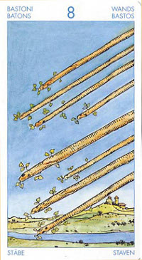

Восьмёрка Жезлов
Прямое положение: большая спешка, большая надежда, спешка по направлению к завершению чего-либо, которое обещает гарантированный успех (счастье).
Вы можете влюбиться, увлечься каким-нибудь проектом или идеей, посвящая им всю свою энергию и энтузиазм.
Основное значение этой карты - время. Это - единственная из всех 78 карт, ясно указывающая, что события произойдут в самом ближайшем времени. Но у нее есть и более глубокое значение, она показывает, что что-то меняется, что-то носится в воздухе и наступит скорее, чем мы ожидаем, и что этот процесс уже начался, даже если мы этого пока еще не заметили. При этом Восьмерка Жезлов предвещает по преимуществу благоприятные события, добрые вести или приятные сюрпризы.
Быстрота - умение войти в какой-либо мир. Если ты, например, хочешь быть известным и общепризнанным литератором, тебе мало писать хорошие романы; ты должен быть, принят в круг литераторов, а для этого соответственно одеваться, играть в теннис или пить водку и т. д.
Восьмерка жезлов- это воплощение закона, причем закона социального.
Восьмерка жезлов символизирует науку, книги, печатное слово, обучение. Появление этой карты в раскладе может служить сигнификатором того, что
доверие к вам или ваше доверие к кому-то может в ближайшее время быть подвергнуто испытанию. Это карта проверки на "моральную устойчивость",
"политическую грамотность".
Восьмерка жезлов может означать внезапный прогресс, продвижение в той или иной области, какие-то социальные новшества, на которые нужно быстро реагировать.
Карта действия.Время делать шаги к своей цели и планировать следуюшие. Удача, новая любовь, способность перескочить все барьеры на своем пути. Иногда перелет самолетом.Также дела связанные с земледелием.Советует вкладывать капитал в проекты будущего.
На личном фронте данная карта может свидетельствовать об окончании страстной влюбленности или любовной связи, она также может сигнализировать о ревности и конфликтах, которые привносят в отношения смятение, неразбериху и неуверенность. Проекты или поездки могут откладываться, а реализация может казаться невозможной, оставляя ощущение, что ситуация будет оставаться в подвешенном состоянии в течение неопределенного периода времени. Изменить свою точку зрения - не исключено, что это единственное, что вам сейчас необходимо.
В перевернутом положении карта скажется в опасности быть обесчещенным, столкнуться с фальшью, ложью, мишурой.
В отрицательном значении:ссоры,противостояния,распри в браке или с деловыми партнерами. Ревность,замедление развития всех дел.